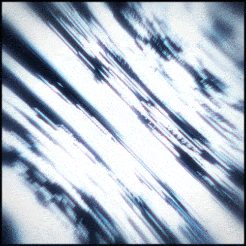

hi loll, u made it here ♡
hi, i'm onte. i make music based on what i feel. a lot of my sound comes from late nights, memories, attachment, and everything that stays on your mind longer than you'd like.
i don't really stick to one sound. i just create whatever feels right in the moment, and hope someone out there connects with it in their own way.
if you're here early, i appreciate you. there's a lot more to come. <3